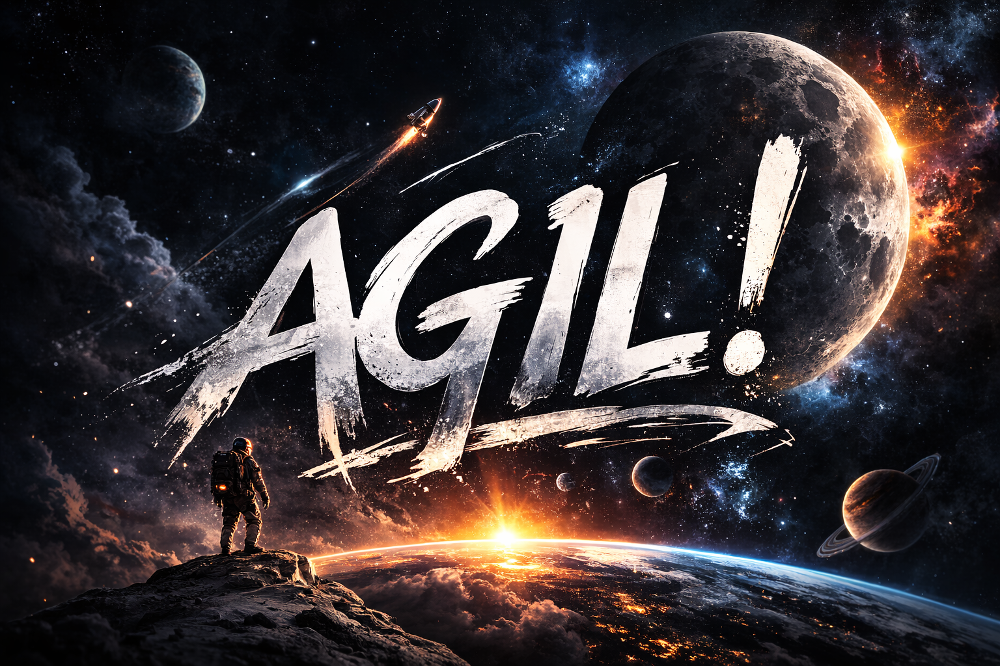

Vi jobbar hela tiden paralellt i flera projekt
Arbetet drivs agilt och utvecklingen sker därför utan fasta slutdatum. I stället arbetar teamet i korta veckosprintar där de mest prioriterade eller akuta behoven hanteras först. Detta arbetssätt gör att resurserna kan användas effektivt och att verksamhetens behov kan mötas löpande allt eftersom de uppstår.
Vi stöttar hela sektor välfärd i arbetet med verksamhetens olika datasystem. Eftersom sektor välfärd är en av kommunens största sektorer innebär det att många verksamheter behöver stöd samtidigt.
Det handlar därför inte om att någon verksamhet bortprioriteras, utan om att behoven är många och omfattande. Akuta uppdrag hanteras alltid först, samtidigt som arbetet pågår parallellt med flera utvecklingsprojekt.
Pågående projekt och uppdrag
Systemteamet arbetar löpande med flera utvecklings- och digitaliseringsprojekt inom vård och omsorg. Syftet är att förenkla arbetssätt, öka kvaliteten i verksamheten och skapa bättre stöd för personalen i det dagliga arbetet.
- PIX – utveckling och införande av processer i Treserva som stödjer verksamhetens arbetsflöden och bidrar till ett mer strukturerat och rättssäkert arbetssätt.
- Mitt Treserva – införande av det nya användargränssnittet i Treserva som ger personalen bättre överblick över arbetsuppgifter, processer och information i systemet.
- Treserva-appen – Fas 2 – vidareutveckling av det mobila arbetssättet i verksamheten, bland annat genom införande av digitala signeringslistor för läkemedelshantering.
- Digitala utbildningar – framtagning av digitalt utbildningsmaterial för verksamheten för att underlätta introduktion, kompetensutveckling och stöd i systemanvändning.
- Manualer och rutiner – genomgång och uppdatering av manualer, utbildningsmaterial och arbetssätt kopplat till Treserva och andra digitala system.
- Tillsynskameror – samarbete med välfärdsutvecklare kring införande av digital tillsyn, både traditionella kameror och lösningar med AI-sensorer.
- Nyckelfria lås och medicinskåp – utveckling av lösningar som förbättrar säkerheten och förenklar hanteringen av nycklar och läkemedel i verksamheten.
- Informationsskärmar – införande av digitala informationsskärmar på särskilda boenden för att förbättra informationsspridning till personal och brukare.
- WiFi på boenden – arbete med att säkerställa stabil trådlös uppkoppling på samtliga boenden som grund för digitala arbetssätt och välfärdsteknik.

Vi jobbar intensvt att modernisera Treserva
- Modern arbetsmiljö – vi arbetar aktivt med att utveckla Treserva och gå från den gamla skrivbordsapplikationen (Classic/Prod) till en modern webbaserat system.
- Arbete i webben – de nya funktionerna utvecklas i webbaserade applikationer som kan användas på dator, surfplatta eller mobil.
- Lättare att göra rätt – Mitt Treserva och webben gör att det blir lättare att göra rätt samt svårare att göra fel.
- Dynamiska applikationer – gränssnittet anpassar sig efter användarens roll och situation. Information uppdateras i realtid och systemet visar endast de funktioner och steg som är relevanta för den aktuella arbetsuppgiften.